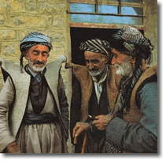

Foto y acertijo de N. Bailey.

El pueblo kurdo cuenta con al menos 25 millones de personas. El kurdo es un miembro importante de la rama irania de la familia de lenguas indoeuropea. Hay varios dialectos del kurdo. El kurdo kurmanji lo hablan entre 12 y 15 millones de personas que viven en Turquía, Irán, Irak y Siria, y está representado por tres estándares literarios y varias variedades habladas. Algunos hablantes viven también en el sur de la antigua Unión Soviética, sobre todo en Armenia y Georgia. El siguiente acertijo viene de la variedad de kurdo kurmanji que se habla en la antigua Unión Soviética. Esa variedad normalmente se escribe con el alfabeto cirílico (como el ruso), pero aquí se presenta con un alfabeto latino modificado.
Este acertijo tiene dos partes. Primero, empareja las traducciones con las oraciones kurdas. Segundo: ¿qué crees que significa la última oración kurda?